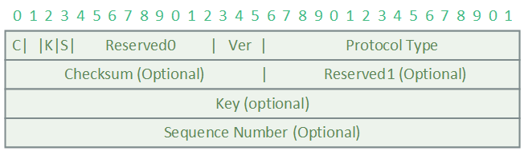
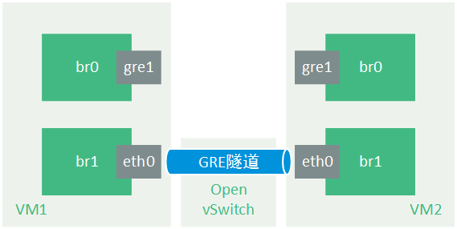
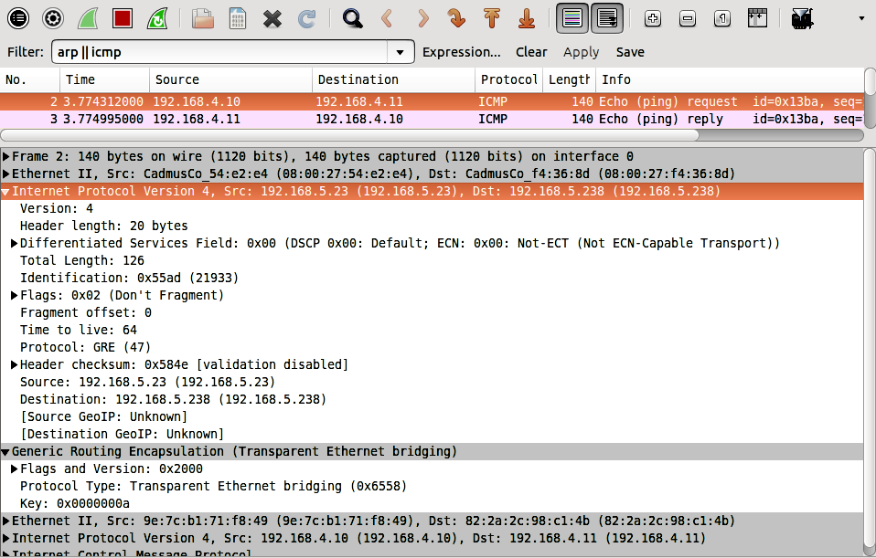

GRE隧道技术
GRE（Generic Routing Encapsulation，通用路由协议封装）协议是通过对已有报文进一步封装实现在另一网络层的传输，常见应用为IP-over-IP，是一种隧道（Tunnel）技术。
Tunnel是一个虚拟的点对点连接，提供了一条通路使封装的数据报文能够在这个通路上传输,并且在一个Tunnel的两端分别对数据报进行封装及解封装。图中的路由器A和B作为Tunnel Endpoint实现对报文的封装工作，而在应用中为便于部署也有通过软件方式实现的封装技术。

* 本图片来源于GRE技术介绍
上图IP network在对GRE进行转发时，将根据报文外层的Delivery Header部分进行转发，被封装在内部的Payload packet可视为GRE报文的数据字段。通用GRE报文格式如下：
其中GRE Header字段在RFC2784标准中定义如下，后在RFC2890中提出改进方案。在RFC2890中，当设置Key标志位（报文中的2 bit）为1时，增加的Key Field（32 bits）可用于同一个隧道内的多个私有网络/流量的隔离。
RFC2784
RFC2890

OpenStack neutron网络中的应用
在OpenStack neutron网络下，GRE作为一种隧道技术被应用于实例跨节点通信时的租户流量隔离。不同租户的报文在经由OVS Tunnel Bridge转发时，将设置不同的Key，以用于在对端GRE Endpoint实现对解封装报文的转发。
而在使用隧道（包括GRE和VXLAN）作为租户隔离技术时，节点间的转发设备将无法区分节点内具体租户以及实例的流量，即在转发时一个计算节点即一个“用户”。所以对于ToR来说，MAC表项由所有实例的MAC信息减少到Tunnel Endpoint（物理机节点）的MAC信息，以避免大规模数据中心应用时ToR表项空间不足以及路由器表项空间不足等问题。

* 本图片来源于Scenario: Classic with Open vSwitch
实验
在OpenStack neutron模型中，有通过Open vSwitch实现的GRE的方案，所以本实验尝试通过OVS复现该功能，并测试转发网络对GRE报文的处理。
实验环境
实验环境与搭建基于Open vSwitch的GRE隧道实验一文类似，通过2台虚拟机实现模拟Tunnel Endpoint以及用户，另外在虚拟机间的转发使用OVS替代网桥。
实验拓扑：

设备信息：
| 设备 | IP | MAC |
|---|---|---|
| VM1-br0 | 192.168.4.10 | 9e:7c:b1:71:f8:49 |
| VM1-br1 | 192.168.5.23 | 08:00:27:54:e2:e4 |
| VM2-br0 | 192.168.4.11 | 82:2a:2c:98:c1:4b |
| VM2-br1 | 192.168.5.238 | 08:00:27:f4:36:8d |
| VM1-eth0 | Null | 08:00:27:54:e2:e4 |
| VM2-eth0 | Null | 08:00:27:f4:36:8d |
实验流程
利用Mininet默认命令在物理机快速创建OVS s1，并将虚拟机分别加入该OVS的s1-eth1和s1-eth2（默认生成的h1/h2在10.0.0.0/8网段，不会对实验造成干扰）。为便于调试该OVS，使用Ryu作为控制器。
1 | $ sudo mn --controller=remote |
虚拟机的网桥设置与原文相同，分别配置网桥br0和br1的IP地址及网关信息。
VM1：
1 | $ ovs-vsctl add-br br0 |
VM2:
1 | $ ovs-vsctl add-br br0 |
在建立GRE隧道时，添加in_key和out_key参数，以便通过流表来设置Tunnel id（即GRE报文的Key Field）。对应所加流表项在封装报文时设置Tunnel id为10，并从2端口发出（即本实验中eth0的端口号，可通过ovs-ofctl show br0命令查看）。
VM1:
1 | $ ovs-vsctl add-port br0 gre1 -- set interface gre1 type=gre \ |
VM2:
1 | $ ovs-vsctl add-port br0 gre1 -- set interface gre1 type=gre \ |
为实现通信，通过控制器在物理机的s1下发以下流表，实现对Tunnel Endpoint的ARP处理及GRE报文的转发。为便于在控制器端分析报文，对于未匹配报文统一将其发送至控制器。
1 | $ ovs-ofctl dump-flows s1 |
在VM1 ping VM2，观察VM1的ARP信息，并通过Wireshark抓取通过VM1 eth0的ICMP报文。1
2
3
4
5
6
7
8
9
10
11$ ping 192.168.4.11 -c1
PING 192.168.4.11 (192.168.4.11) 56(84) bytes of data.
64 bytes from 192.168.4.11: icmp_seq=1 ttl=64 time=0.977 ms
--- 192.168.4.11 ping statistics ---
1 packets transmitted, 1 received, 0% packet loss, time 0ms
rtt min/avg/max/mdev = 0.977/0.977/0.977/0.000 ms
root@ovs-VirtualBox:/home/ovs# arp -n
Address HWtype HWaddress Flags Mask Iface
192.168.5.238 ether 08:00:27:f4:36:8d C br1
192.168.4.11 ether 82:2a:2c:98:c1:4b C br0

由抓包结果可见，相较于原实验，GRE Header的Flags and Version值为0x2000而非0x0，即Key标志位被置1。同时Key Field被流表设为0xa，与GRE桥br0配置的流表相吻合。
若隧道未设置流表，则发送的报文Key标志位仍置1，但Key Field为0x0。
扩展实验
实验一
在配置GRE隧道时，可通过以下命令指定Tunnel id，此时封装的GRE报文Key Field将被设置为0xa。由于指定了Key值，在若VM2未配置key使用缺省0x0或者值的内容不为0xa时，Endpoint将会丢弃该报文。
1 | $ ovs-vsctl add-port br0 gre1 -- set interface gre1 type=gre \ |
实验二
根据报文的Protocol字段值为47可以确定报文为GRE报文，便想到OVS能否进一步匹配GRE的Tunnel id，修改s1的部分流表如下：
1 | $ ovs-ofctl dump-flows s1 |
虽然流表可见，然而并没有什么用处，该条流表并不会匹配任何报文。因为tun_id的匹配是建立在GRE Endpoint能解封装GRE报文的情况下的，此时s1的端口未配置GRE隧道，将不会对报文内的GRE Header做处理。
结论
- OpenStack neutron中使用GRE实现租户间流量隔离，默认是在计算节点的OVS Tunnel Bridge上实现，为减轻CPU负担可以使用边缘的交换机实现offload，比如H3C的混合方案。
- GRE是一种隧道技术，既然是隧道那么就必须存在Endpoint实现封装与解封装，payload对于“正常”的网络设备应该是透明的，实验二中OVS显然无法正常匹配Tunnel id。
- 但是因为本质上来说GRE并没有对payload加密，被截获的报文还是能够被解封装的，所以可通过IPSec等技术进行加密。
参考资料
- https://tools.ietf.org/html/rfc1701
- https://tools.ietf.org/html/rfc2784
- https://tools.ietf.org/html/rfc2890
- https://github.com/yeasy/openstack_understand_Neutron/tree/master/gre_mode
- https://github.com/openstack/neutron/blob/dd4f1253c951d78a5b497680dfb31317ba469a58/neutron/plugins/ml2/drivers/openvswitch/agent/openflow/native/br_tun.py
- http://www.sdnlab.com/5889.html
- http://openvswitch.org/pipermail/dev/2013-February/025591.html